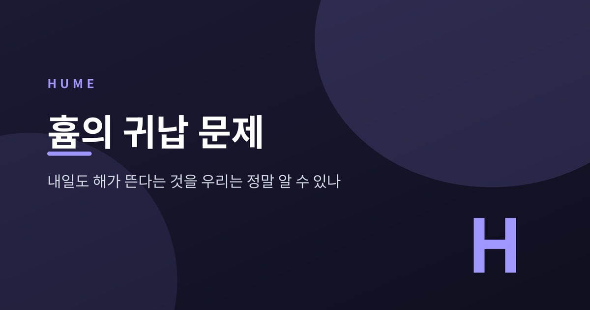
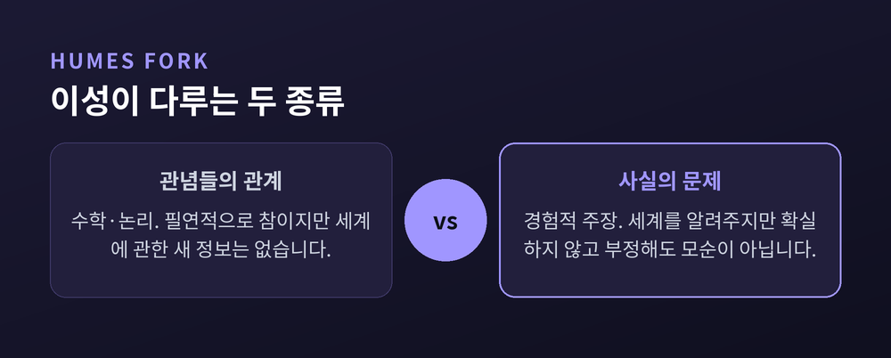
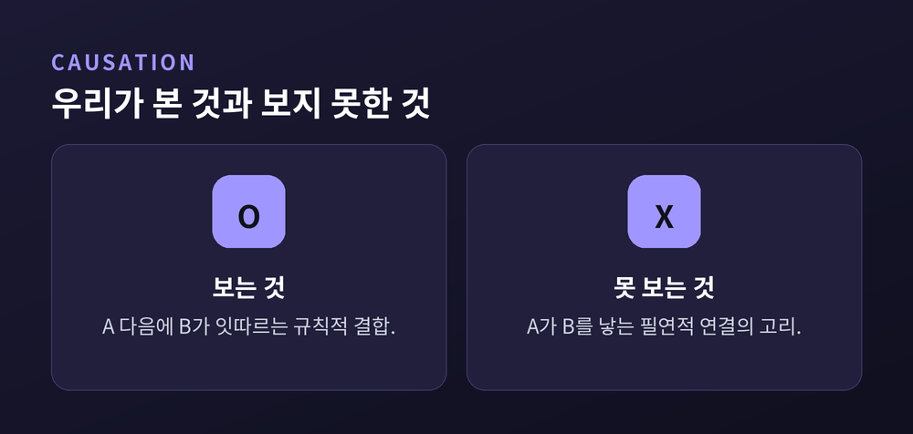
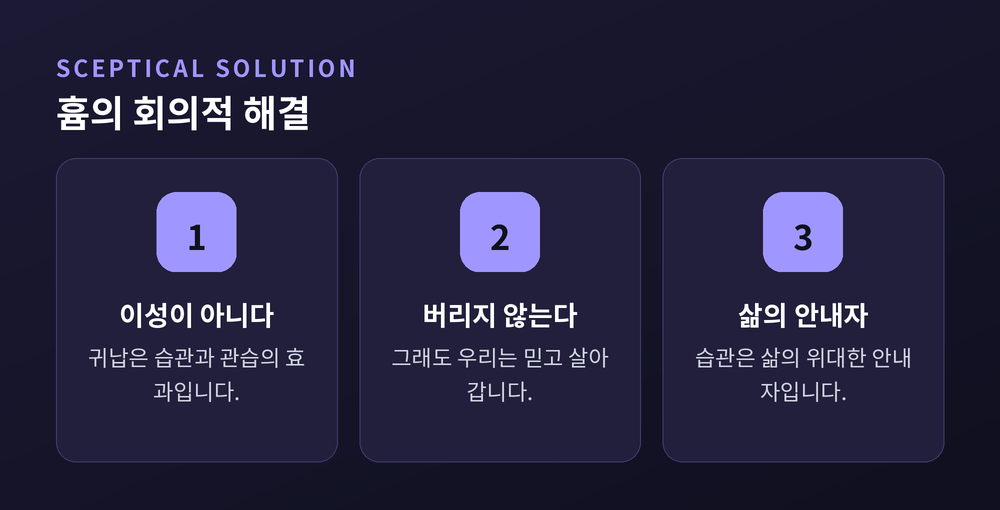

세 줄 요약

오늘은 데이비드 흄이 남긴 '귀납 문제(problem of induction)'를 정리해 보겠습니다. 300년 가까이 철학자들을 괴롭혀 온 물음이지만, 출발점은 누구나 아는 사실 하나입니다. 해는 매일 떴고, 내일도 뜰 것입니다. 그런데 우리는 그것을 정말 '아는' 것일까요.
우리는 내일 아침에도 해가 뜬다고 믿습니다. 이유를 물으면 대답은 대개 하나입니다. "지금까지 늘 그랬으니까요."
이 대답은 튼튼해 보입니다. 하지만 흄은 여기에 작은 틈을 냅니다. '지금까지 늘 그랬다'는 것은 과거에 관한 사실입니다. '내일도 그럴 것이다'는 미래에 관한 주장입니다. 과거의 사실이 미래의 주장을 어떻게 보장합니까.
관찰한 것에서 관찰하지 못한 것으로 넘어가는 이 도약을 귀납이라 부릅니다. 흄의 물음은 단순합니다. 이 도약을 무엇이 정당화하는가. 이 물음이 왜 심오한지는, 우리가 세계에 관해 아는 거의 모든 것이 바로 이 도약 위에 서 있기 때문입니다.
흄은 경험론자였습니다. 마음의 모든 내용을 두 가지로 나눕니다. 감각과 감정처럼 생생한 직접 지각인 인상(impression), 그리고 그 인상의 흐릿한 복사본인 관념(idea)입니다. 관념은 반드시 앞선 인상에서 옵니다.
여기서 유명한 '흄의 갈래(Hume's Fork)'가 나옵니다. 이성이 다루는 대상은 두 종류뿐이라는 구분입니다.
하나는 관념들의 관계입니다. 수학이나 논리가 여기 속합니다. '삼각형의 내각의 합은 180도'라는 명제는 필연적으로 참이고, 부정하면 모순이 됩니다. 대신 세계에 관한 새로운 정보는 주지 않습니다.
다른 하나는 사실의 문제입니다. '내일 해가 뜬다' 같은 경험적 주장이 여기 속합니다. 세계를 알려 주지만 결코 확실하지 않습니다. '내일 해가 뜨지 않는다'는 말은 이상하게 들려도 모순은 아닙니다. 얼마든지 상상할 수 있습니다. 모순이 아니라는 것, 이 한 가지가 문제의 씨앗입니다.

흄은 인과라는 개념도 같은 칼로 해부합니다. 당구공 A가 B에 부딪히면 B가 굴러갑니다. 우리는 A가 B를 '움직이게 만들었다'고 말합니다. 그런데 우리가 실제로 본 것은 무엇입니까.
우리가 본 것은 A의 운동 다음에 B의 운동이 잇따랐다는 사실뿐입니다. A가 B를 밀어내는 '힘'이나 둘을 잇는 '필연적 연결의 고리' 자체는 어디에서도 지각되지 않습니다. 감각은 그런 것을 결코 보여 주지 않습니다.
흄은 우리가 관찰하는 것에 이름을 붙입니다. 항상적 결합(constant conjunction)입니다. 한 종류의 사건이 다른 종류의 사건 뒤에 규칙적으로 따라오는 것, 딱 그만큼입니다. 불 다음에는 열이 왔고, 빵을 먹으면 영양이 됐습니다. 이런 결합이 반복되면 마음속에 하나를 보면 다른 하나를 기대하는 성향이 생깁니다.
여기서 흄은 놀라운 진단을 내립니다. 우리가 '필연적 연결'이라 부르는 그 관념의 정체는, 바깥 세계에 있는 무엇이 아니라 마음 안에 생긴 이 습관적 기대라는 것입니다.

이제 논증의 심장부입니다. "관찰한 모든 빵은 영양이 있었다, 그러므로 다음 빵도 영양이 있을 것이다." 이 추론이 성립하려면 숨은 전제 하나가 필요합니다. 자연의 제일성 원리(uniformity of nature) — 미래는 과거를 닮는다, 자연은 한결같이 굴러간다는 전제입니다.
흄은 묻습니다. 그 전제 자체는 무엇이 정당화합니까. 앞서 논증은 두 종류뿐이라 했습니다. 연역적 논증과 경험적 논증입니다. 제일성 원리를 둘 중 어느 것으로도 세울 수 없다는 것이 흄의 결론입니다.
연역으로는 안 됩니다. 연역이 증명하는 결론은 부정하면 모순이 되어야 합니다. 그런데 '자연이 한결같지 않다'는 말은 모순이 아닙니다. 상상할 수 있습니다. 그러니 제일성은 연역으로 증명되지 않습니다.
경험으로도 안 됩니다. "과거에 자연이 늘 한결같았으니 앞으로도 그럴 것이다"라고 말하고 싶어집니다. 그러나 이 말은 이미 '과거에서 미래로 넘어가도 된다'는 제일성을 슬쩍 다시 쓰고 있습니다. 증명하려는 것을 증명 안에 몰래 집어넣은 셈입니다. 이것을 선결문제 요구, 곧 순환논증이라 합니다.
연역은 결론이 너무 강해서 닿지 못하고, 경험은 자기 자신을 돌아 순환에 빠집니다. 빠져나갈 문이 없습니다.
논증이 이렇게 끝나면 절망만 남을 것 같습니다. 그러나 흄의 결론은 뜻밖에 담담합니다. 그는 '회의적 해결(sceptical solution)'이라 불렀습니다.
경험에서 나오는 모든 추론은 이성의 작품이 아니라 관습과 습관(custom·habit)의 효과라는 것입니다. 반복된 경험이 마음에 기대의 성향을 새기고, 그 기대가 곧 우리의 귀납적 믿음입니다. 믿음이란 논증의 산물이 아니라, 인상과 습관을 통해 생생해진 하나의 관념일 뿐입니다.
오해하지 않아야 할 대목이 있습니다. 흄은 "그러니 귀납을 그만두라"고 말하지 않습니다. 오히려 습관을 "인간 삶의 위대한 안내자"라 불렀습니다. 우리는 내일도 해가 뜬다고 믿을 수밖에 없고, 그렇게 사는 것이 자연스럽습니다.
예전에 우리는 그 믿음이 이성의 증명 위에 서 있다고 여겼습니다. 지금 흄이 보여 준 것은, 그것이 습관 위에 서 있다는 사실입니다. 믿음의 내용은 그대로인데, 믿음의 토대가 바뀐 것입니다.

흄의 도전은 후대 철학을 다시 짰습니다. 세 갈래의 응답이 특히 유명합니다.
칸트는 흄이 자신을 "독단의 잠에서 깨웠다"고 했습니다. 그는 인과와 제일성을 '종합적 선험' 명제로 구하려 했습니다. 질문 자체를 바꿉니다. "우리가 무엇을 관찰하는가"가 아니라 "관찰이 가능하려면 무엇이 전제되어야 하는가". 그 답으로 인과·공간·시간이 오성의 구조에 이미 내장되어 있다고 보았습니다. 다만 개별 인과 법칙은 칸트도 귀납으로만 얻는다고 인정합니다.
포퍼는 흄이 옳다고 인정합니다. 귀납은 정당화되지 않는다고요. 그래서 그는 과학이 귀납을 쓴다는 전제 자체를 버립니다. 과학은 사례를 쌓아 이론을 입증하는 것이 아니라, 대담한 가설을 세우고 그것을 반증하려 애쓰며, 반증을 견딘 이론을 잠정적으로 붙든다는 것입니다. 문제를 푸는 대신 우회하는 길입니다.
굿맨은 문제를 한 겹 더 벗깁니다. '그루(grue)'라는 술어를 만듭니다. "시점 t 이전에 관찰되어 초록이거나, 그 이후에 관찰되어 파랑"이면 그루입니다. 지금까지 본 에메랄드는 모두 초록이었지만, 똑같이 모두 그루이기도 합니다. 같은 증거가 "에메랄드는 초록"과 "에메랄드는 그루"라는 상충하는 두 예측을 똑같이 뒷받침합니다. 흄의 물음이 "왜 귀납을 믿는가"였다면, 굿맨의 물음은 "왜 하필 초록 같은 술어로만 귀납하는가"입니다.
정리하면 이렇습니다. 흄은 우리의 지식이 서 있는 땅이 생각보다 단단하지 않다는 것을 보여 주었습니다. 하지만 그는 그 땅을 무너뜨리려던 것이 아닙니다. 우리가 무엇을 딛고 서 있는지 정직하게 보라고 청했을 뿐입니다.
"내일도 해가 뜬다 — 우리는 그것을 증명하지 못하지만, 그렇게 믿으며 살아갑니다."
내일 아침 해가 떠오르는 것을 볼 때, 그것이 이성의 결론인지 습관의 선물인지 한번 물어보시면 좋겠습니다. 답이 어느 쪽이든, 그 물음을 던지는 순간 우리는 이미 흄의 곁에 서 있는 셈입니다.